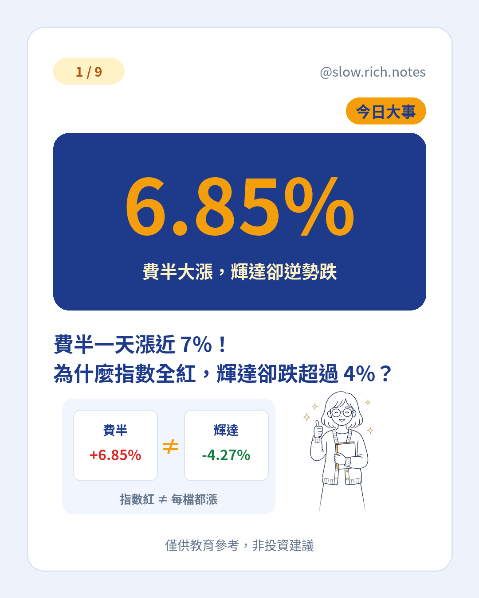

美股 11/9（一）收盤，台北時間已是 11/10 清晨。道瓊收 52,389.75 點，漲 1,104.02 點（+2.15%）；標普 500 收 7,549.94 點，漲 173.08 點（+2.35%），是 4/8 以來最大單日漲幅；那斯達克收 25,253.14 點，漲 673.71 點（+2.74%）。最醒目的是費城半導體指數（費半）：收 10,033.93 點，大漲 643.68 點，漲幅 6.85%。上週費半才跌逾 12%，昨天一天又強彈回來。
可是同一天，輝達收 178.67 美元，跌 4.27%，盤中一度跌近 9%，是費半成分股裡唯一收黑的公司；超微漲 13.26%、博通漲 8.78%。背景是輝達董事會對執行長啟動獨立調查。指數漲跌是一籃子股票的平均結果，像班級平均可以很高，班上仍可能有人不及格。若還在打基本功，可先看股票到底是什麼。
對台股更直接的參考是 ADR。台積電 ADR 收 388.62 美元，漲 3.51%；日月光 ADR 漲 8.63%、聯電 ADR 漲 7.51%。ADR 是台灣公司在美國上市的存託憑證，台灣開盤常拿來當隔夜參考，但它不是保證：開盤後還是看今天誰在買、誰在賣。若想對照台股 11/9 的大漲，可讀台股一天漲 1,960 點。
另一條推手是油價回落：西德州原油跌 4.38%，收每桶 86.85 美元；布蘭特原油跌 5.85%，收 92.57 美元。油是運輸和很多商品的成本，市場預期通膨壓力可能減輕，買盤就容易回升。這是常見連動，不是定律。想理解油價如何碰到日常生活，可看油價破 100，你的薪水正在縮水？。
急跌後出現單日強彈並不罕見，但不能只憑一天就認定跌勢結束。若想分清回檔、修正、空頭，可讀回檔、修正、空頭差在哪。先搞懂「指數、個股、ADR、單日反彈」各在說什麼，比猜今天台股開盤紅或綠更有用。